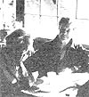

As we've noted several times in these pages, Helen anti Scott Nearing are, light years ahead of most of us when it comes to gelling back to the land and lining a life, of voluntary simplicity..,As well they should be, since they originally homesteader a run-down farm in Vermonts's Green's Mountains away back in the autumn of 1932.
Life was good for the Nearings on that mini-farm . . . until the slopes around them exploded into ski resorts in the early 50's, forcing Helen and Scott to move on to a rocky inlet on the coast of Maine and start all over again.
And that's where you'll find the Nearings today: still clearing brush's till building honest stone houses (Helen and Scott are famous for their stone house's) and still raising most of their vegetarian diet themselves in unbelievably productive wholistic gardens . . . just as they're been doing for nearly 50 years.
Naturally (in more trays than one), the Nearings have learned a few things about homesteading and getting back to basics over the years. And, lucky for all of us, they've, agreed to share some of that knowledge a with MOTHER's readers in a regular question and answer column. If you'd like to get in on the action, send your question or questions about sell-sufficient living on the land to Helen and Scott Nearing, THE Mother Earth News (restricted) P.O. Box 70, Hendersonville, N. C. 28791. And please don't expect personal replies to your queries. The must important and most frequently asked questions will be answered here-and here only-where we all can read chat the Nearings hare to say.
EDITOR'S NOTE: Helen and Scott-regular readers know-have kindly shared a great deal of their knowledge in this column, both about how, they set up their homesteads and about the manner ire which they continue to make their life of voluntary simplicity work. In this issue of MOTHER we'd like to take a moment to review, the philosophy governing the Nearings' lifestyle . . . as excerpted from Continuing the Good Life (available in paperback for $4.95 plus 63 cents shipping and handling from Schocken Books, Dept. TMEN, 200 Madison Avenue, New York, New York 10016).
Like multitudes of people all over the world, we are seeking a good life . . . a simple, balanced, satisfying lifestyle. Like them, our aim is to lend a hand in shaping the planet into a homelike living place for successive generations of human beings and for the many other life forms domiciled in and on Mother Earth, her lands, and waters.
Immediate needs for a good life are food and shelter, as a basis for survival. Beyond these basic necessaries are amenities like education, recreation, and travel, which make life more satisfying and rewarding for individuals and small local groups such as families and other collectives.
We begin our listing of good life attributes with our four-four-four formula: four hours of bread labor; four hours of professional activity; and four hours dedicated to fulfilling our obligations and responsibilities as members of the human race and as participants in various local, regional, national, and world civic activities.
Bread labor provides the basic essentials of living normal, healthful, serviceful lives. The work of the world must be done and we should all share in it- Professional activities enable us to specialize and contribute our mite to the world's sum total of skills and competencies. Association enables us to share experience and knowledge with our fellow beings.
The four-four-four formula should be specific as well as general. Everyone, rich or poor, young or old, can contribute somewhat to the world's physical work. Bread labor can and should be performed by every able-bodied human being from age 7 to 77 (though Scott at 95 is still carrying his end of the load). Bread labor should be an obligatory and honorable phase of the daily routine in which everyone can take an active part as a matter of course. This daily contribution to the work of the world will make a vigorous, self-supporting society.
The personal interests and skills of each human being will be another contribution that will produce inventions and artistic achievements from which society will also benefit.
Civic responsibilities and activities taken on by all adults will benefit the whole society and bring people together in common interests of survival and well-being.
If we would have things done, we must be prepared to do them. This principle applies to the life of the individual; it is even more urgent when issues of group concern are up for consideration. Those who would be well served serve themselves, individually and collectively.
With us Westerners in the present century this principle deserves double emphasis, because in our immediate past we have overemphasized the individual to the detriment of the group. Groups have grown larger, more numerous, and more complex. Doubling populations automatically shift attention from individual to group activity. Increase in size, coupled with growing complexity and interdependence, must play down the individual and upgrade the group and group problems .
The essence of life consists in living. In the words of Robert Louis Stevenson, "To travel hopefully is better than to arrive, and the true success is to labor."
From earliest childhood to the final insecure steps of old age, those who put the most into life get the most out of life. This applies to quantity of life and quantity of output. Theory guides; practice determines. The uniting of theory with practice provides a higher degree of assurance and promotes a more rewarding body of dependable guidance for individual and group living.
Muscles grow strong and responsive with exercise. Muscles of the spectator go flabby and shrink. This rule is equally applicable to the problems of physical function and social action.
Personally, we in our entire homesteading venture have endeavored to keep our social as well as physical muscles in shape. We tried, as a couple, and insofar as we could in groups, to set up and continue a life pattern to maintain health and sanity in a period of social insecurity, conflict, disruption, and disintegration.
We began experimenting with an al ternative life pattern nearly half a century ago, in 1932. We were not young, but we were adventurous. Our first steps were tentative. As we proceeded, we became clearer in our thinking and surer that the course we were following was right for us...
Specifically, we have provided ourselves during more than four decades with the basic necessaries of life in exchange for a sufficient amount of planning, persistence, and hard work.
We have been able to carry on our writing and research. Scott has written six books since leaving the city, only one of which saw the light of day in the commercial book market. Six additional books were written jointly with Helen. She has continued her lifelong interest in music and has added secretarial, editorial, writing, and housebuilding skills to her accomplishments.
In our forty-odd years of homesteading we have reshaped old ideas and practices and tried out new ones. Never for a moment did we sit back and say to ourselves: This is it; we have learned all there is to know about homesteading; we have arrived.
On the contrary, the further we went with our bread labor, our professional activities, and our civic work, the more we realized that we had only scratched life's surface. There is so much more to experience, to do, and to learn that only many lives ahead will give us time and opportunities to fulfill all we hope to do ..
Driven by whatever urge, motivated by a wide variety of interests and convictions, all human beings, early in their lives, are possessed by the wish and the will to live a satisfying and rewarding life. Speaking for ourselves, we, at advanced ages, are still questioning, investigating, searching, and aiming to build a more rewarding and more creative life. For those who are so minded and so willed, we have written this book.
If we have helped a number of people to get started on a lifestyle more satisfying than that of the average United States citizen, they have in turn contributed measurably to the building of our own lives. They have helped us with gardening and with building. By the exchange of insights, experiences, and skills, they have cooperated as fellow workers in our joint efforts. We thank them and salute them as we continue in our own varied fields of productive and creative endeavor.
|
 |
|
|